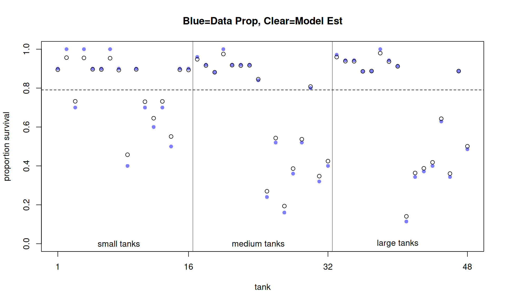
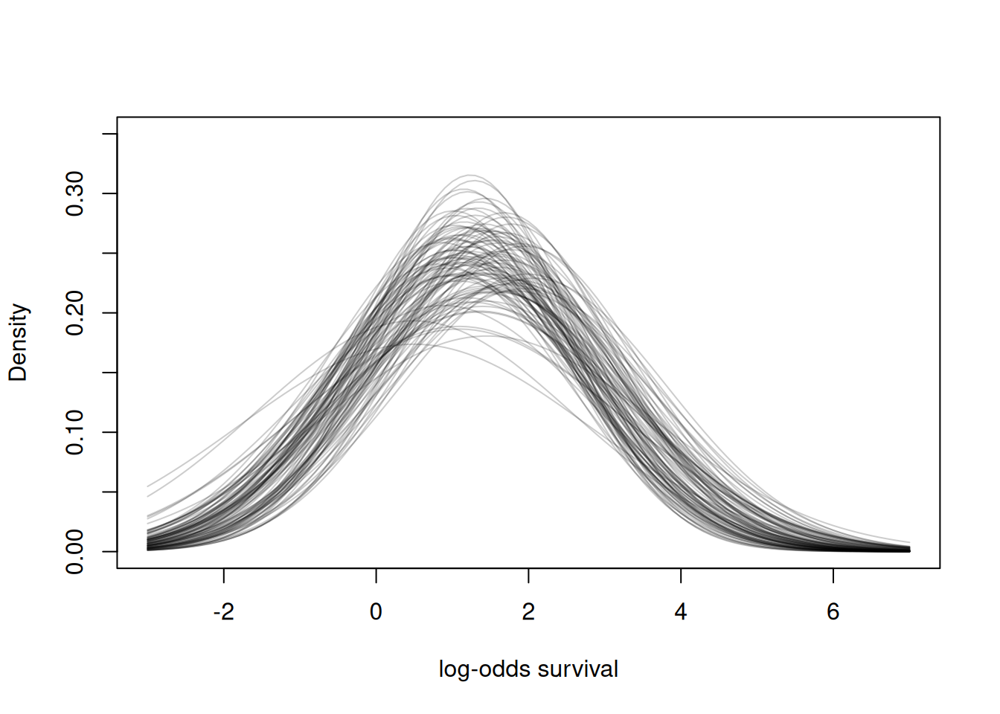
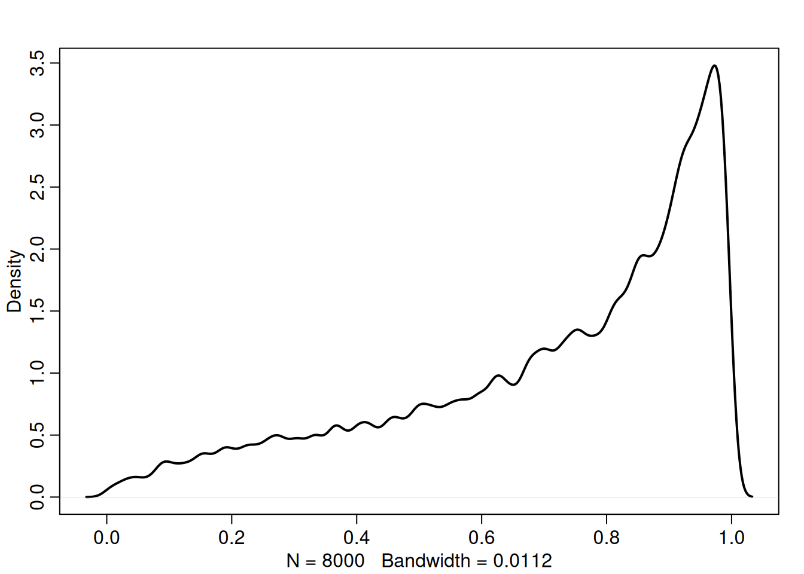
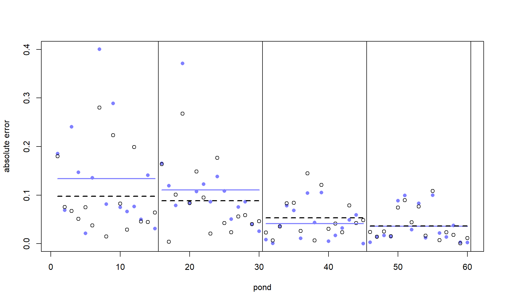
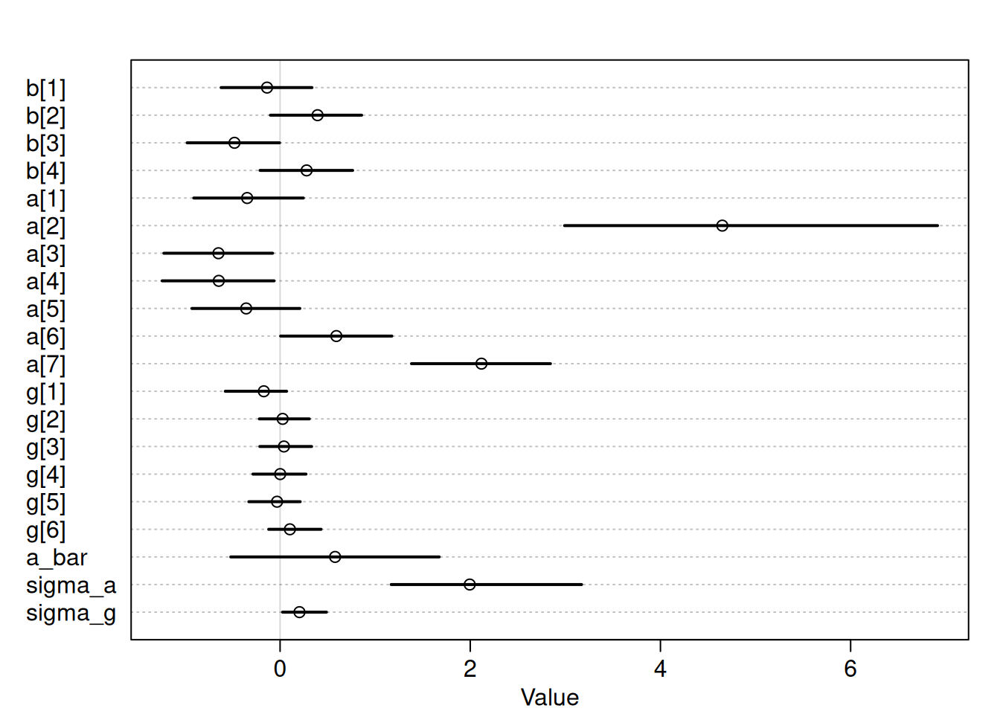
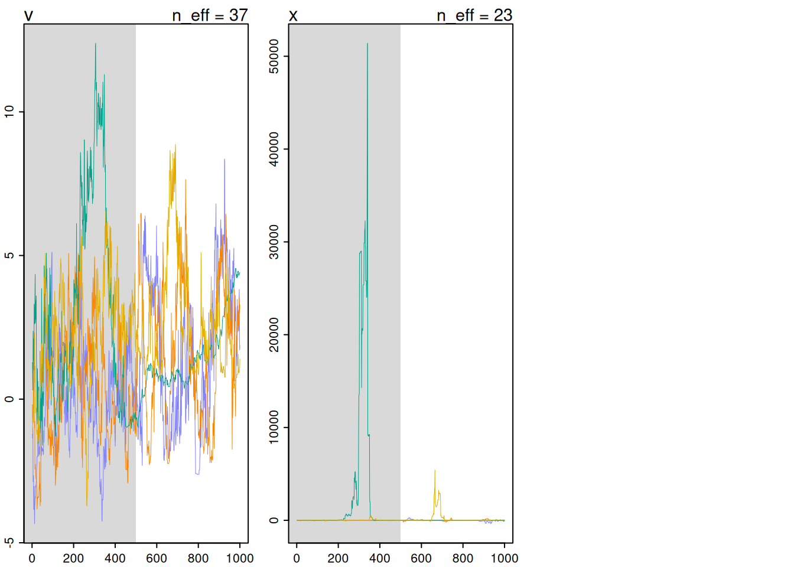
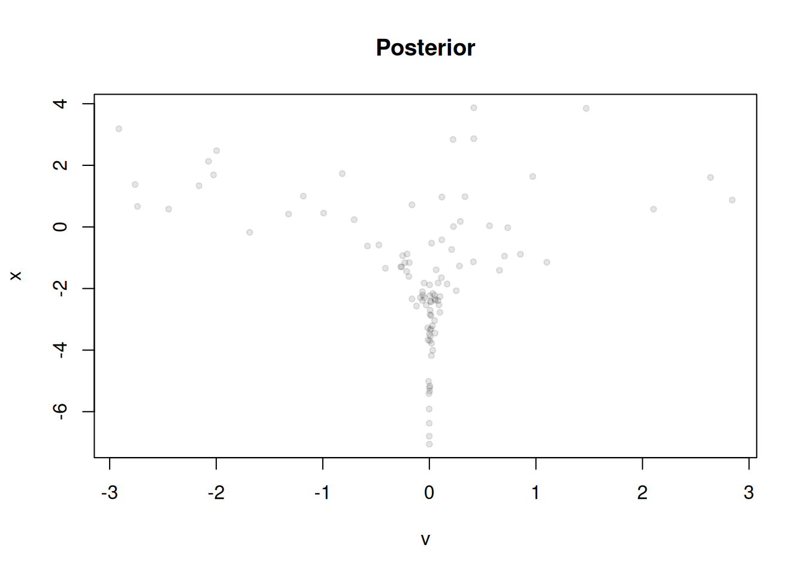

Code
library(rethinking)
library(dagitty)
library(tidyverse)library(rethinking)
library(dagitty)
library(tidyverse)Multilevel models
Multilevel models should always be the default.
Reed frog mortality data:
data('reedfrogs')
d <- reedfrogs
str(d)'data.frame': 48 obs. of 5 variables:
$ density : int 10 10 10 10 10 10 10 10 10 10 ...
$ pred : Factor w/ 2 levels "no","pred": 1 1 1 1 1 1 1 1 2 2 ...
$ size : Factor w/ 2 levels "big","small": 1 1 1 1 2 2 2 2 1 1 ...
$ surv : int 9 10 7 10 9 9 10 9 4 9 ...
$ propsurv: num 0.9 1 0.7 1 0.9 0.9 1 0.9 0.4 0.9 ...Each row in the data is a different tank. We are interested in the number that surv in each based on the denisty (\(N\)). We’ll start with the simple naive model from earlier chapters:
\[\begin{align} S_i &\sim \text{Binomial}(p_i, N_i) \\ \text{logit}(p_i) &= \alpha_{\text{TANK}[i]} \\ \alpha_j &\sim \text{Normal}(0, 1.5) \end{align}\]
d$tank <- 1:nrow(d)
dat <- list(S=d$surv, N=d$density, tank=d$tank)
m13.1 <- ulam(alist(
S ~ dbinom(N, p),
logit(p) <- a[tank],
a[tank] ~ dnorm(0, 1.5)
), data=dat, chains=4, log_lik=T)precis(m13.1, depth=2) |> head() mean sd 5.5% 94.5% rhat ess_bulk
a[1] 1.7132837 0.7676238 0.5874851 3.013712 1.0051910 3174.426
a[2] 2.4366261 0.9505739 1.0565098 4.071234 1.0051617 4860.137
a[3] 0.7794814 0.6946187 -0.2742041 1.886396 0.9990425 4139.109
a[4] 2.3937873 0.9167567 1.0325395 3.927451 0.9997481 3961.674
a[5] 1.7089574 0.7771507 0.5268876 2.991572 1.0029258 4472.983
a[6] 1.7000524 0.7738212 0.5652701 3.013153 1.0001213 4075.040Let’s now look at the multilevel model:
\[\begin{align} S_i &\sim \text{Binomial}(p_i, N_i) \\ \text{logit}(p_i) &= \alpha_{\text{TANK}[i]} \\ \alpha_j &\sim \text{Normal}(\bar{\alpha}, \sigma) \\ \bar{\alpha} &\sim \text{Normal}(0, 1.5) \\ \sigma &\sim \text{Exponential}(1) \end{align}\]
And fit it with ulam:
m13.2 <- ulam(alist(
S ~ dbinom(N, p),
logit(p) <- a[tank],
a[tank] ~ dnorm(a_bar, sigma),
a_bar ~ dnorm(0,1.5),
sigma ~ dexp(1)
), data=dat, chains=4, log_lik=T)compare(m13.1, m13.2) WAIC SE dWAIC dSE pWAIC weight
m13.2 199.0605 7.333674 0.00000 NA 20.43035 0.9998315184
m13.1 216.4375 4.626677 17.37703 4.061174 26.37506 0.0001684816Notice that for both models, they have smaller number of effective parameters than they do in the real model. This is because both models employ some sort of regularizing prior. But, the multilevel model has an even stronger regularizing prior even though it has two more real parameters. This is of course because it learned a stronger prior through the data.
Let’s now plot the effect of using the multilevel model on the parameters.
post <- extract.samples(m13.2)
d$propsurv.est <- logistic(apply(post$a, 2, mean))
plot(d$propsurv, ylim=c(0,1), pch=16, xaxt='n', xlab='tank',
ylab='proportion survival', col=rangi2)
c(1, 16, 32, 48) %>% {axis(1, at=., label=.)}
points(d$propsurv.est)
post$a_bar |> inv_logit() |> mean() |> abline(h=_, lty=2)
c(16.5, 32.5) |> abline(v=_, lwd=0.5)
text(8,0,'small tanks')
text(8+16,0,'medium tanks')
text(8+32,0,'large tanks')
title('Blue=Data Prop, Clear=Model Est')
Let’s take a closer look at the posterior distribution for \(\bar \alpha\) and \(\sigma\) by looking at the Normal distribution they produce:
plot(NULL, xlim=c(-3,7), ylim=c(0,0.35), xlab='log-odds survival', ylab='Density')
for (i in 1:100){
curve(dnorm(x, post$a_bar[i], post$sigma[i]), add=T, col=col.alpha('black', 0.2))
}
Let’s sample some “tanks” for the inferred population distribution of tanks:
sim_tanks <- rnorm(8e3, post$a_bar, post$sigma) # post will be recycled
sim_tanks |> inv_logit() |> dens(lwd=2, adj=0.3)
We talked in the previous chapter about how the beta-binomial or gamma-Poisson accounted for over-dispersion in our data. They did this by adding an extra variance parameter (which was really just marginalized out intercepts). The multilevel model achieves over-dispersion correction as well since we get one observation per group.
One thing to note - we have been using the exponential prior almost exclusively for \(\sigma\) parameters. This is okay usually, but can be problematic when \(\sigma\) can but shouldn’t take larger values. This is because the exponential distribution has long tails which give way to more plausible large variances. You can always mitigate this by using a Half-Normal prior with of course has much thinner tails.
One of the perks of using varying effects is that we are less underfit than the grand mean (complete pooling), and less overfit than the no-pooling estimates (one intercept per tank). This is especially true for when a tank has a low amount of data and it overfits quite aggressively.
Let’s now simulate some data, but instead of tanks, we’ll call them ponds. This will make our mission to predict future ponds survival rate more realistic. Recall the data generating process we modeled before:
\[\begin{align} S_i &\sim \text{Binomial}(p_i, N_i) \\ \text{logit}(p_i) &= \alpha_{\text{TANK}[i]} \\ \alpha_j &\sim \text{Normal}(\bar{\alpha}, \sigma) \\ \bar{\alpha} &\sim \text{Normal}(0, 1.5) \\ \sigma &\sim \text{Exponential}(1) \end{align}\]
To simulate from this, we need to define \(\bar \alpha\), \(\sigma\), and a vector \(\alpha\) for the true pond effects. We’ll also need to assign \(N_i\) for each pond.
Notice that the priors are part of the model when we estimate, but not when we simulate. This is because priors are epistemological, not ontological. That is, priors are from incomplete knowledge of the process, not the inherit random of the process itself. Similar to a coin flip, we know there is some uncertainty in the weightedness of the coin - governing the probability that it comes up heads. But there is also uncertainty from the inherit randomness of the system that we won’t be able to pin down. The latter type of randomness is that from which we sample from. For simulating, we would lock down the probability of the coin.
a_bar <- 1.4
sigma <- 1.5
nponds <- 60
Ni <- c(5,10,25,35) |> rep(each=15) |> as.integer()
set.seed(5005)
a_pond <- rnorm(nponds, a_bar, sigma)
dsim <- data.frame(pond=seq_along(a_pond), Ni, true_a=a_pond)Recall that we can convert to log-odds to probabilities with the logistic function:
dsim$Si <- rbinom(nponds, prob=logistic(dsim$true_a), size=dsim$Ni)
# no pooling estimates
dsim$p_nopool <- dsim$Si / dsim$Ni
# partial pooling estimates
m13.3 <- ulam(alist(
Si ~ dbinom(Ni, p),
logit(p) <- a[pond],
a[pond] ~ dnorm(a_bar, sigma),
a_bar ~ dnorm(0,1.5),
sigma ~ dexp(1)
), data=dsim, chains=4, log_lik=T)post <- extract.samples(m13.3)
dsim$p_partpool <- post$a |> inv_logit() |> apply(2, mean)Now compute the error between the two estimates:
dsim$p_true <- inv_logit(dsim$true_a)
nopool_error <- abs(dsim$p_nopool - dsim$p_true)
partpool_error <- abs(dsim$p_partpool - dsim$p_true)
err_grp <- dsim %>% mutate(nopool_error, partpool_error) %>%
group_by(Ni) %>% summarise(m_nopool=mean(nopool_error), m_part=mean(partpool_error))
plot(1:60, nopool_error, xlab='pond', ylab='absolute error', col=rangi2, pch=16)
points(1:60, partpool_error)
for (i in unique(dsim$Ni)){
end_pt <- max(which(dsim$Ni == i))
abline(v=end_pt + 0.5)
lines(which(dsim$Ni == i), err_grp %>% filter(Ni==i) %>% pull(m_nopool) %>% rep(15), lwd=2, col=rangi2)
lines(which(dsim$Ni == i), err_grp %>% filter(Ni==i) %>% pull(m_part) %>% rep(15), lwd=2, lty=2)
}
Notice the error is much larger for smaller ponds. The blue line is the error for no pooling estimates. You’ll notice that partial pooling does better on average.
Partial pooling might not always be the answer. If outlier points are suspected to be possible, then partial pooling might regularize those points to strongly.
Recall the chimpanzee dataset from before. There were different actors and blocks. The blocks specify the different day the experiment was done. Notice this is what is known as a cross-classified multilevel model. The main difference between this an hierarchy multilevel model is that one actor is not assigned to one day. That is, a chimp might appear on different days. Regardless if this was a hierarchy or cross-classified, it wouldn’t change the model structure:
\[\begin{align} L &\sim \text{Binomial}(1,p_i)\\ \text{logit}(p_i) &= \alpha_{\text{ACTOR}[i]} + \gamma_{\text{BLOCK}[i]} + \beta_{\text{TREATMENT}[i]}\\ \beta_j &\sim \text{Normal}(0, 0.5)\\ \alpha_j &\sim \text{Normal}(\bar \alpha, \sigma_\alpha)\\ \gamma_j &\sim \text{Normal}(0, \sigma_\gamma) \\ \bar \alpha &\sim \text{Normal}(0, 1.5) \\ \sigma_\alpha &\sim \text{Exponential}(1) \\ \sigma_\gamma &\sim \text{Exponential}(1) \\ \end{align}\]
One thing to notice, the \(\gamma\) vector is centered at zero. That is because we can’t identify a mean for each varying intercept type. This would be akin to the right/left leg example. There would be a high degree of correlation. We can also think of this as: there is one global mean. The actor vector perturbs that, then the block vector next. We could just as easily have given the global mean to the population mean of \(\gamma\) instead.
Let’s now fit the model:
data("chimpanzees")
d <- chimpanzees
d$treatment <- 1 + d$prosoc_left + 2*d$condition
dat_list <- list(
pulled_left = d$pulled_left,
actor = d$actor,
block_id = d$block,
treatment = d$treatment |> as.integer()
)
set.seed(13)
m13.4 <- ulam(alist(
pulled_left ~ dbinom(1, p),
logit(p) <- a[actor] + g[block_id] + b[treatment],
b[treatment] ~ dnorm(0, 0.5),
a[actor] ~ dnorm(a_bar, sigma_a),
g[block_id] ~ dnorm(0, sigma_g),
a_bar ~ dnorm(0, 1.5),
sigma_a ~ dexp(1),
sigma_g ~ dexp(1)
), data=dat_list, chains=4, cores=4, log_lik=T)est <- precis(m13.4, depth=2)
est mean sd 5.5% 94.5% rhat ess_bulk
b[1] -0.137057028 0.3048831 -0.620338120 0.335316081 1.005529 506.7992
b[2] 0.394144828 0.3035896 -0.101810086 0.857400499 1.001123 505.5572
b[3] -0.479359062 0.3039009 -0.976847855 -0.006089812 1.006157 538.6465
b[4] 0.279144969 0.3000176 -0.210963611 0.763181807 1.002661 485.5217
a[1] -0.345940202 0.3619639 -0.907848472 0.244810073 1.001341 490.4486
a[2] 4.650511043 1.2992305 2.991709893 6.914118191 1.002681 906.0745
a[3] -0.648270702 0.3611865 -1.222230589 -0.078461537 1.001026 568.2277
a[4] -0.644599133 0.3618834 -1.240225305 -0.062896243 1.001300 605.3340
a[5] -0.356123052 0.3641387 -0.927370839 0.208407323 1.003454 559.0310
a[6] 0.591968922 0.3669466 0.005595042 1.175290501 1.001066 568.0040
a[7] 2.117882975 0.4557635 1.381918726 2.843236570 1.003039 640.5984
g[1] -0.170902913 0.2136331 -0.576438476 0.069044160 1.003351 562.5813
g[2] 0.026945492 0.1650323 -0.218139343 0.307572621 1.003304 1484.4694
g[3] 0.040581328 0.1706475 -0.213304258 0.331734646 1.006552 1489.5497
g[4] 0.001204788 0.1693886 -0.285626040 0.272534181 1.013628 1616.2130
g[5] -0.031811796 0.1668612 -0.328509894 0.211574073 1.006145 1510.7279
g[6] 0.103250871 0.1853779 -0.119900642 0.430881059 1.002173 1143.3693
a_bar 0.578458475 0.7114969 -0.518872696 1.673269130 1.006396 917.4256
sigma_a 1.994575610 0.6452425 1.168432519 3.170578896 1.001749 788.1982
sigma_g 0.203993367 0.1520194 0.025770046 0.487487081 1.009005 206.9422est |> plot()
Notice that sigma_a has a much larger magnitude than sigma_g. The model is picking up on the fact that there is more variation among actors, but not so much around blocks. That is, it matters a lot more who the actor is and less so what day it is. You’ll also see low effective sample sizes. That is mostly due to high autocorrelation that will be fixed later (non-centered param).
Let’s do a quick compare where we don’t have a varying block intercept.
m13.5 <- ulam(alist(
pulled_left ~ dbinom(1, p),
logit(p) <- a[actor] + b[treatment],
b[treatment] ~ dnorm(0, 0.5),
a[actor] ~ dnorm(a_bar, sigma_a),
a_bar ~ dnorm(0, 1.5),
sigma_a ~ dexp(1)
), data=dat_list, chains=4, cores=4, log_lik=T)compare(m13.4, m13.5) WAIC SE dWAIC dSE pWAIC weight
m13.5 531.1970 19.19458 0.0000000 NA 8.560742 0.6163477
m13.4 532.1451 19.32516 0.9481491 1.623267 10.513103 0.3836523Notice, we lost two effective parameters, but in reality we lost 7. That is because the block vector was shrunk towards zero.
We could also add a varying intercept to our treatment variable. Many people would say that we can’t because use varying effects here since treatment was experimentally controlled. But really, the only thing we need to worry about is exchangability. If we can swap the order of the indexes for the variable, and the interpretation does not change, then we are good to go.
Let’s see what that kind of model would look like:
m13.6 <- ulam(alist(
pulled_left ~ dbinom(1, p),
logit(p) <- a[actor] + g[block_id] + b[treatment],
b[treatment] ~ dnorm(0, sigma_b),
a[actor] ~ dnorm(a_bar, sigma_a),
g[block_id] ~ dnorm(0, sigma_g),
a_bar ~ dnorm(0, 1.5),
sigma_a ~ dexp(1),
sigma_g ~ dexp(1),
sigma_b ~ dexp(1)
), data=dat_list, chains=4, cores=4, log_lik=T)coeftab(m13.4, m13.6) m13.4 m13.6
b[1] -0.14 -0.12
b[2] 0.39 0.37
b[3] -0.48 -0.43
b[4] 0.28 0.26
a[1] -0.35 -0.38
a[2] 4.65 4.56
a[3] -0.65 -0.66
a[4] -0.64 -0.66
a[5] -0.36 -0.35
a[6] 0.59 0.55
a[7] 2.12 2.11
g[1] -0.17 -0.15
g[2] 0.03 0.06
g[3] 0.04 0.06
g[4] 0.00 0.02
g[5] -0.03 -0.02
g[6] 0.10 0.11
a_bar 0.58 0.62
sigma_a 1.99 1.98
sigma_g 0.20 0.21
sigma_b NA 0.56
nobs 504 504Because the coefficients are well informed by the data, the varying effects doesn’t change the estimates much.
Recall the HMC is all about conservation of “energy”. When the simulation runs, it expects the starting energy to be the same as the ending energy. When this is not the case, we call this a divergent transition. This mostly due to the issue with discretizing the sampler and how the discretization manifests with steep geometries (poorly). We can fix this by changing the adapt_delta or reparameterizing.
Let’s look at a simple model:
\[\begin{align} v &\sim \text{Normal}(0,3) \\ x &\sim \text{Normal}(0, \exp(v)) \end{align}\]
m13.7 <- ulam(alist(
v ~ normal(0, 3),
x ~ normal(0, exp(v))
), data=list(N=1), chains=4)precis(m13.7) mean sd 5.5% 94.5% rhat ess_bulk
v 1.863151 2.109869 -1.547401 5.398674 1.117667 36.56997
x 41.336194 324.815328 -63.837649 94.850935 1.124270 23.19956Not great, the trace plot is terrible too:
traceplot(m13.7)
This is of course Neal’s funnel. As \(v\) approaches zero, the posterior for \(x\) gets very steep and hard to sample from. The example above: \(x \sim \text{Normal}(0, \exp(v))\) is an example of centered parameterization. Really just indicating that \(x\) is conditional on one or more other parameters. The non-centered parameterization looks like:
\[\begin{align} v &\sim \text{Normal}(0,3) \\ z &\sim \text{Normal}(0,1) \\ x &= z\cdot \exp (v) \end{align}\]
Recall that in the text we usually standardize a variable by dividing by the standard deviation and subtracting the mean (the z-score). This is the same procedure. Let’s now see that this model fits much better:
m13.7nc <- ulam(alist(
v ~ normal(0, 3),
z ~ normal(0,1),
gq> real[1]: x <<- z*exp(v)
), data=list(N=1), chains=4)precis(m13.7nc) mean sd 5.5% 94.5% rhat ess_bulk
v 0.040345088 2.898735 -4.449517 4.707179 1.003648 1505.805
z 0.004952278 1.010775 -1.521948 1.686363 1.004630 1507.287
x 42.208685370 1303.142704 -24.460435 24.782189 1.001189 1433.295post <- extract.samples(m13.7nc) |> as.data.frame() |> select(x,v) |> filter(abs(x) < 3)
# dens <- MASS::kde2d(post$x, post$v, n = 10, h=4)
post |> sample_n(100) |> plot(col = rgb(0, 0, 0, 0.1), pch = 20,
xlab = "v", ylab = "x", main = "Posterior")
# contour(dens, col = "firebrick", lwd = 2, add=T)We still might need to use the centered parameterization (likelihood dominating).
Let’s go back to the m13.4 model and change the adapt_delta.
m13.4b <- ulam(m13.4, chains=4, cores=4, control=list(adapt_delta=0.99))Better, but we are hitting maximum treedepth warnings now. Let’s go ahead and do the non-centered parameterization.
The model now looks like:
\[\begin{align} L &\sim \text{Binomial}(1,p_i)\\ \text{logit}(p_i) &= \bar \alpha + z_{\text{ACTOR}[i]} \cdot \sigma_{\alpha} + x_{\text{BLOCK}[i]} \cdot \sigma_\gamma + \beta_{\text{TREATMENT}[i]} \\ \beta_j &\sim \text{Normal}(0, 0.5)\\ z_j &\sim \text{Normal}(0, 1)\\ x_j &\sim \text{Normal}(0, 1)\\ \bar \alpha &\sim \text{Normal}(0, 1.5) \\ \sigma_\alpha &\sim \text{Exponential}(1) \\ \sigma_\gamma &\sim \text{Exponential}(1) \\ \end{align}\]
The actor intercepts now look like:
\[\alpha_j = \bar \alpha + z_j \sigma_\alpha\]
and the block intercept is:
\[\gamma_j = x_j \sigma_\gamma\]
Let’s now sample:
m13.4nc <- ulam(alist(
pulled_left ~ dbinom(1, p),
logit(p) <- a_bar + z[actor]*sigma_a + x[block_id]*sigma_g + b[treatment],
b[treatment] ~ dnorm(0, 0.5),
z[actor] ~ dnorm(0,1),
x[block_id] ~ dnorm(0, 1),
a_bar ~ dnorm(0, 1.5),
sigma_a ~ dexp(1),
sigma_g ~ dexp(1),
gq> vector[actor]:a <<- a_bar + z*sigma_a,
gq> vector[block_id]:g <<- x*sigma_g
), data=dat_list, chains=4, cores=4, log_lik=T)